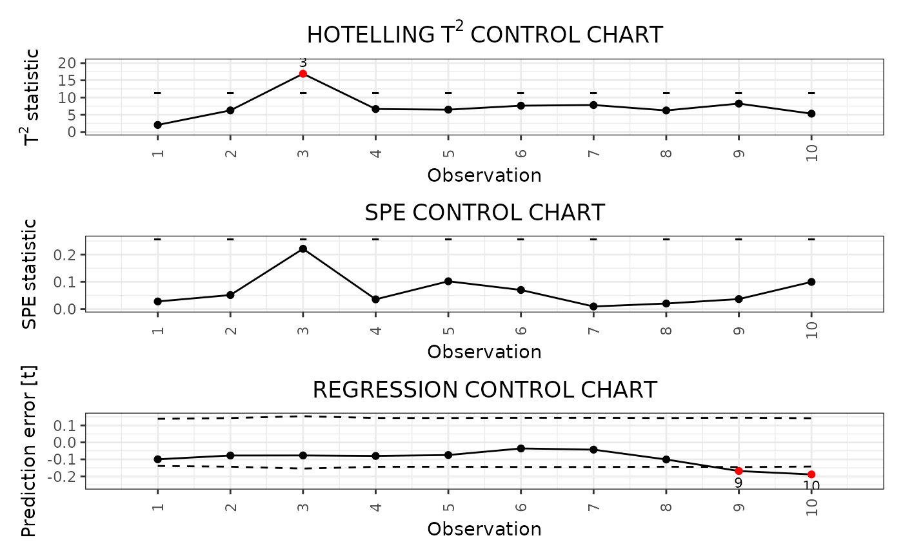

R/04_phaseII.R
control_charts_sof_pc.RdThis function builds a data frame needed to plot control charts for monitoring a multivariate functional covariates based on multivariate functional principal component analysis (MFPCA) and a related scalar response variable using the scalar-on-function regression control chart, as proposed in Capezza et al. (2020).
In particular, this function provides:
* the Hotelling's T^2 control chart,
* the squared prediction error (SPE) control chart,
* the scalar regression control chart.
This function calls control_charts_pca for the control charts on
the multivariate functional covariates and regr_cc_sof
for the scalar regression control chart.
The training data have already been used to fit the model. A tuning data set can be provided that is used to estimate the control chart limits. A phase II data set contains the observations to be monitored with the built control charts.
control_charts_sof_pc( mod, y_test, mfdobj_x_test, mfdobj_x_tuning = NULL, alpha = list(T2 = 0.0125, spe = 0.0125, y = 0.025), limits = "standard", seed = 0, nfold = NULL, ncores = 1 )
| mod | A list obtained as output from |
|---|---|
| y_test | A numeric vector containing the observations of the scalar response variable in the phase II data set. |
| mfdobj_x_test | An object of class |
| mfdobj_x_tuning | An object of class |
| alpha | A named list with three elements, named |
| limits | A character value.
If "standard", it estimates the control limits on the tuning
data set. If "cv", the function calculates the control limits only on the
training data using cross-validation
using |
| seed | If |
| nfold | If |
| ncores | If |
A data.frame with as many rows as the number of
multivariate functional observations in the phase II data set and
the following columns:
* one id column identifying the multivariate functional observation
in the phase II data set,
* one T2 column containing the Hotelling T^2 statistic calculated
for all observations,
* one column per each functional variable, containing its contribution to the T^2 statistic,
* one spe column containing the SPE statistic calculated
for all observations,
* one column per each functional variable, containing its contribution to the SPE statistic,
* T2_lim gives the upper control limit of the
Hotelling's T^2 control chart,
* one contribution_T2_*_lim column per each
functional variable giving the
limits of the contribution of that variable to the
Hotelling's T^2 statistic,
* spe_lim gives the upper control limit of the SPE control chart
* one contribution_spe*_lim column per
each functional variable giving the
limits of the contribution of that variable to the SPE statistic.
* y_hat: the predictions of the response variable
corresponding to mfdobj_x_new,
* y: the same as the argument y_new
given as input to this function,
* lwr: lower limit of the 1-alpha
prediction interval on the response,
* pred_err: prediction error calculated as y-y_hat,
* pred_err_sup: upper limit of the 1-alpha
prediction interval on the prediction error,
* pred_err_inf: lower limit of the 1-alpha
prediction interval on the prediction error.
library(funcharts) data("air") air <- lapply(air, function(x) x[1:220, , drop = FALSE]) fun_covariates <- c("CO", "temperature") mfdobj_x <- get_mfd_list(air[fun_covariates], n_basis = 15, lambda = 1e-2) y <- rowMeans(air$NO2) y1 <- y[1:100] y2 <- y[201:220] mfdobj_x1 <- mfdobj_x[1:100] mfdobj_x_tuning <- mfdobj_x[101:200] mfdobj_x2 <- mfdobj_x[201:220] mod <- sof_pc(y1, mfdobj_x1) cclist <- control_charts_sof_pc(mod = mod, y_test = y2, mfdobj_x_test = mfdobj_x2, mfdobj_x_tuning = mfdobj_x_tuning) plot_control_charts(cclist)